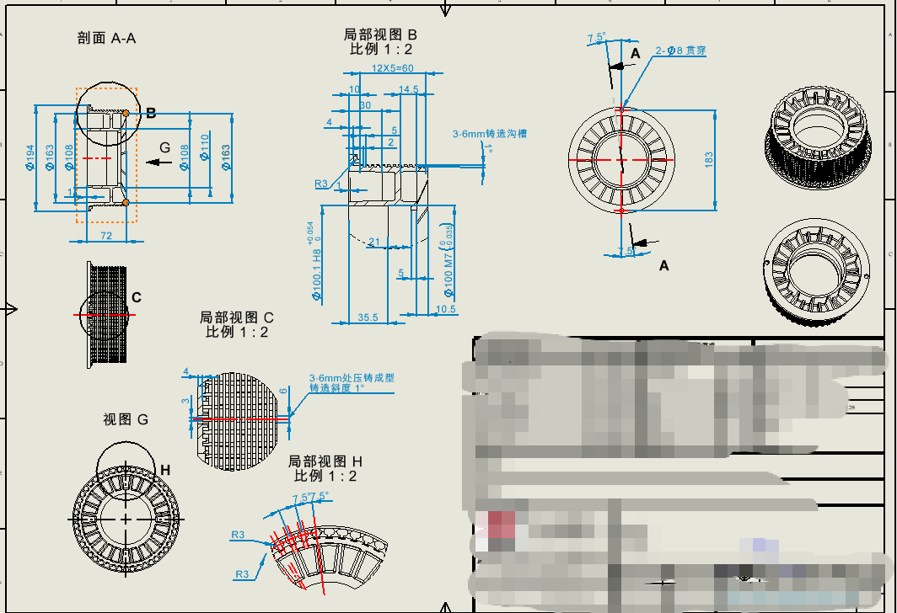

1. 用户图纸（现状）

图面已有结构、迷宫槽、Φ100.1 H8 / Φ100 M7 和 1° 斜度，但没有基准、形位公差、粗糙度和完整技术要求。
形位公差 · 尺寸公差 · 技术要求 ｜ 按 GB/T 1182、GB/T 1800、GB/T 10595、MT 821 ｜ 可直接补到 SolidWorks 图框

图面已有结构、迷宫槽、Φ100.1 H8 / Φ100 M7 和 1° 斜度，但没有基准、形位公差、粗糙度和完整技术要求。
| 名称 | 铝合金压铸轴承座（端盖） |
|---|---|
| 产品 | 低阻超轻托辊，辊径档 Φ194 |
| 轴承 | 6309（d45 × D100 × B25） |
| 孔公差 | Φ100 M7 — 与 MT 821「轴承孔为 M7」一致，不要改成 H7 |
| 工艺 | ADC12 高压压铸 + 轴承孔 / 止口机加 |
Φ108 / Φ110 / Φ163 是否与管体过盈，本张零件图不能唯一确定，总装图确认后再把配装止口的同轴度落到具体直径上。
基准 A = Φ100 M7 孔轴线（转）。基准 B = 轴承止口端面（轴向）。低阻成败看这两项：孔不圆、止口不垂直，轴承就会别劲。
座是铝，圈是钢。铝的线胀约 23×10⁻⁶，钢约 12×10⁻⁶。温度一升，孔比外圈胀得快，H7 会松，外圈爬行，阻力发黏。
MT 821 规定轴承孔为 M7。尺寸段 >80～100 mm：
| 公差带 | 上偏差 | 下偏差 | 极限 |
|---|---|---|---|
| Φ100 M7 | 0 | −0.035 | 100.000～99.965 |
| Φ100.1 H8 | +0.054 | 0 | 100.154～100.100 |
Φ100.1 H8 是让刀 / 引导，比 M7 段大 0.1，避免刮轴承外圈。两段必须同轴。
| 尺寸 | 公差带 | 极限尺寸 mm | 粗糙度 | 面 | 作用 |
|---|---|---|---|---|---|
| Φ100 M7 | 0 / −0.035 | 100.000～99.965 | Ra 0.8 | 机加 | 6309 外圈定位 |
| Φ100.1 H8 | +0.054 / 0 | 100.154～100.100 | Ra 1.6 | 机加 | 让刀、密封引导 |
| 轴承孔深度（B=25 段） | ±0.10 | 按图台肩 | Ra 1.6 | 机加 | 外圈全部落入 M7 |
| 止口端面 / 总宽 72 | ±0.10（止口） | — | Ra 1.6 | 机加 | 两端对称、轴向游隙 |
| 2-Φ8 贯穿 | H11（+0.09/0） | 8.09～8.00 | Ra 6.3 | 钻 | 工艺孔 |
| 183 | ±0.15 | 183.15～182.85 | — | 钻 | 两孔中心距 |
| 尺寸 | 建议 | 面 | 说明 |
|---|---|---|---|
| Φ194 | ±0.40 DCTG6；若与管体齐平则止口机加 js12 | 压铸 | 外缘 / 可能的摩擦盘 |
| Φ163 | ±0.36 DCTG6 | 压铸 | 筋廓包络，非配合 |
| Φ108 / Φ110 | 配装则 H8/H9；空刀则 DCTG6 | 待确认 | 总装图定 |
| 12×5=60 迷宫 | 槽距 ±0.20，槽深 3～6 按图 | 压铸 | 槽内禁止飞边 |
| 斜度 1°、R3、筋 3 / 4 / 6 | 斜度 ±0.5°；筋 DCTG6 | 压铸 | 减重，非配合 |
未注：压铸 GB/T 6414 DCTG6；机加 GB/T 1804-m；形位 GB/T 1184-K；角度 ±0.5°。
成辊短辊、高带速径向圆跳动 0.5 mm（GB/T 10595 表 13）。两端座各留 Φ0.05 同轴度，剩下给管体和配装。
| # | 被测 | 符号 | 值 mm | 基准 | 框格写法 | 优先级 |
|---|---|---|---|---|---|---|
| 1 | Φ100 M7 孔 | 圆柱度 | 0.008 | — | ⌭ 0.008 | 必须 |
| 2 | 止口端面 B | 平面度 | 0.02 | — | ▱ 0.02 | 必须 |
| 3 | 止口端面 B | 垂直度 | 0.03 | A | ⊥ 0.03 | A | 必须 |
| 4 | Φ100.1 H8 | 同轴度 | Φ0.03 | A | ◎ Φ0.03 | A | 必须 |
| 5 | 管体配装止口（确认直径后） | 同轴度 | Φ0.05 | A | ◎ Φ0.05 | A | 必须 |
| 6 | 管体配装止口端面 | 端面圆跳动 | 0.05 | A | ↗ 0.05 | A | 建议 |
| 7 | Φ194 外缘（机加或找正时） | 径向圆跳动 | 0.08 | A | ↗ 0.08 | A | 建议 |
| 8 | 2-Φ8 | 位置度 | Φ0.20 | A | ⊕ Φ0.20 | A | 一般 |
技 术 要 求 1. 材料：ADC12（GB/T 15115 / 等同 YL112），高压压铸。 2. 未注铸造尺寸公差按 GB/T 6414 DCTG6；未注机加工尺寸按 GB/T 1804-m； 未注形位公差按 GB/T 1184 K 级；未注铸造圆角 R3，筋根 R1～R1.5。 3. 铸造斜度 1°（按图示方向）。 4. 压铸后 T5 时效（175 ℃ × 3～5 h，或按厂内工艺），时效后再机加工。 5. Φ100 M7 为 6309 轴承孔，Ra 0.8 μm，禁止涂层，禁止研抛改变公差带。 6. 机加工面：轴承孔、止口端面、（确认后的）管体配装止口。其余为压铸面。 7. 锐边倒钝 0.2×45°；迷宫沟槽（12×5=60）内不得有飞边、铝屑、冷隔。 8. 铸件不得有裂纹、冷隔。轴承孔及止口加工后，表层 2 mm 内不允许气孔、缩松。 9. 除轴承孔、止口配合面外，允许铬酸盐钝化或喷涂；配合面涂防锈油。 10. 本零件用于 Φ194 低阻超轻托辊。成辊性能应满足 GB/T 10595，低阻指标见企业标准。
| 项目 | 指标 |
|---|---|
| 径向圆跳动 | v≥3.15 m/s：L<550 为 0.5；550～950 为 0.7 |
| 轴向窜动 | 500 N 下 ≤0.7 mm |
| 旋转阻力 | 250 N、600 r/min；辊径>108：防尘 3.0 N / 防水 4.35 N |
| 停 1 h 再转 | ≤ 上值的 1.5 倍 |
| 防水 | 浸水 24 h，进水 ≤5 g |
| 寿命 | ≥25 000 h，损坏率 ≤10% |
| 空载旋转阻力 | ≤ 国标表 15 的 50%（Φ194 防水目标 ≤2.0 N，能到 1.5 N 更好） |
| 迷宫 | 内外密封件不得接触（MT 821 3.4.6） |
| 项目 | 方法 | 频次 |
|---|---|---|
| Φ100 M7 | M7 通止塞规 + 内径表 | 100% |
| 圆柱度 0.008 | 3 截面×3 向，或 CMM | 首件 + 抽 |
| 垂直度 0.03 | CMM / 检具 | 首件 + 抽 |
| 同轴度 Φ0.05 | CMM | 首件 + 班抽 |
| Ra 0.8 | 粗糙度仪 | 抽 |
| 迷宫飞边 | 目视 | 100% |
| 气孔 | 机加面目视；首件剖切 | 首件 / 调模 |
这张只覆盖轴承座。轴（Φ45 配 6309 内圈）、管体过盈、密封件、总装轴向游隙，需要你继续把图发来，按同样口径补公差和技术要求。